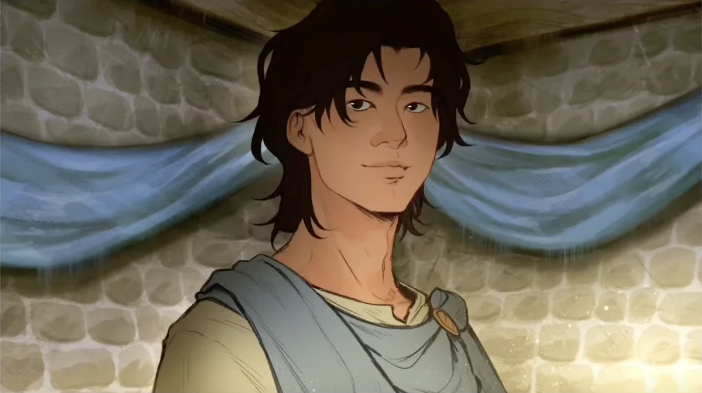

| Telemachos | |
|---|---|
|  | |
| Zeichnung von Luiza Xavier Mazzei | |
| Biografie | |
| Titel | Prinz von Ithaka |
| Krieger des Verstands | |
| Spitznamen | Bengel |
| Champ | |
| Kleiner Wolf | |
| Prinz | |
| Zugehörigkeit | Königreich Ithaka |
| Athene | |
| Familie | Odysseus (Vater) |
| Penelope (Mutter) | |
| Antiklea (Großmutter) | |
| Hermes (Ur-Urgroßvater) | |
| Status | Lebendig |
| Hinter den Kulissen | |
| Auftritte | Troja Saga (erwähnt) |
| Ozean Saga (Gastauftritt) | |
| Unterwelt Saga (erwähnt) | |
| Donner Saga (erwähnt) | |
| Weisheits Saga | |
| Ithaka Saga | |
| Original Stimme | Miguel Veloso (MICO) |
| Deutsche Stimme | Rolle offen |
Telemachos
Schicksal kann gefährlich wirken, doch ich will zur Legende werden! - Telemachos (Legende)
Telemachos ist der Prinz von Ithaka. Er ist der Sohn von Odysseus und Penelope und Freund von Athene. Er dient als einer der Protagonisten in der Weisheits Saga.
Biografie
(WIP)
Auftritte
-
Troja Saga
- Das Pferd und der Säugling (erwähnt)
- Just a Man (erwähnt)
-
Ozean Saga
- Halt dir Freunde nah (Gastauftritt)
-
Unterwelt Saga
- Nicht mehr du (erwähnt)
- Monster (erwähnt)
-
Donner Saga
- Qualen (erwähnt mehr oder weniger)
- And'res Beast(erwähnt)
- Meuterei (erwähnt)
- Donner Bringer (Odysseus' Halluzination)
-
Weisheits Saga
- Legende (Debüt)
- Kleiner Wolf
- Uns wird's gut geh'n
- Götter Spiele (erwähnt)
-
Vergeltungs Saga
- Charybdis (erwähnt)
- Geh schon ins Wasser (erwähnt)
-
Ithaka Saga
- Haltet sie (erwähnt)
- Odysseus
- Ich kann mich nur Fragen
Trivia
- Der Spitzname „kleiner Wolf“ bezieht sich auf Odysseus, als Poseidon sagt: „Ein Rudel Wölfe trifft den Haifisch nur einmal“. Er nennt Odysseus und die Crew in Grausamkeit Wölfe.